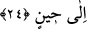
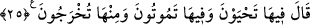

gün eline ipek ve altın alarak şöyle buyurmuştur: “Bu ikisi ümmetimin erkeklerine
haram, kadınlarına helâldir.”[15]
24. Allah: Birbirinize düşman olarak inin! Sizin için yeryüzünde bir süreye kadar
yerleşme ve faydalanma vardır, buyurdu.
Allah Teâlâ: “Birbirinize düşman olarak inin.” buyurdu.
Bu emir, ya Âdem ve Havva ile onların zürriyetinedir; ya da ikisine ve İblis’edir.
İblis’in Âdem (a.s.)’a ve zürriyetine düşman olarak yaratılması, akrebin sokmak ve
kurdun kapmak için yaratılması gibidir. Âdem (a.s.)’ın halifeliği sebebiyle İblis
melekler arasındaki riyasetini yitirdiği için ona düşman olmuştur. Bize de İblis’i
düşman tanımak emredilmiştir. Çünkü evladın şanına yaraşan, babasının düşmanını
düşman bilmektir.
“Sizin için yeryüzünde bir süreye” ecel gelinceye “kadar yerleşme ve faydalanma
vardır.” buyurdu.”
Ancak Âdem (a.s.) buna çok üzüldü, bir daha cennete hiç dönemeyeceğini zannetti.
Bunun üzerine Cenab–ı Hak şöyle buyurdu:
25.
“Orada
yaşayacaksınız,
orada
öleceksiniz
ve
orada
(diriltilip)
çıkarılacaksınız” dedi.
Allah Teâlâ: “Orada” yeryüzünde “yaşayacaksınız, orada öleceksiniz” orada kabre
konulacaksınız. Sonra yaptıklarınızın karşılığını görmek üzere “ve yine oradan” dirilip
“çıkarılacaksınız.” dedi.”
Âdem (a.s.), bu ilâhî hitabı işitince tekrar cennete döndürüleceğini anladı ve Allah
Teâlâ’nın lütfu ve vaadi ile teselli oldu.
İmam Kuşeyrî ne güzel söylemiştir: Âdem (a.s.) melekler tarafından kıskanılmış,
hepsi tarafından ona secde edilmişdi. Onun başında vuslat tâcı, bedeninde kerâmet
elbisesi, belinde Allah’a yakınlık kemeri, boynunda Hakk’a yakınlık gerdanlığı vardı.
Yaratılanlardan hiçbiri mevkice ondan üstün değildi. Hiçbir kimse onun eriştiği
yüceliklere ulaşamamıştı. Bir an bile kesilmeksizin ona: “Ey Âdem, Ey Âdem” diye
daima iltifatla nida ediliyordu. Ancak işlediği bir hata yüzünden elbiseleri soyuldu, bazı
üstün meziyetlerinden arındırıldı ve mekanı değiştirildi, bütün işleri karıştı, Allah’ın